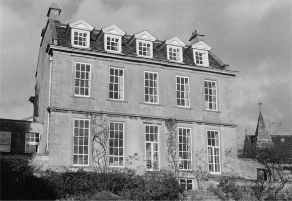

Type of building:
Detached village house
Listing:
Grade ll*
Plan:
Double pile, five bay. Two-storey with basement and attics in dormers.
Summary of the probable main building
history:
Built in about 1712. Part of the basement probably late 16th Century.

South elevation
Exterior:
Ashlar construction with raised quoins. Stone slated pitched roof with flat leaded
centre. Coped raised verges. Coved moulded cornice. Sash windows to north elevation
with dormers at attic level. This elevation houses the modern principal entry
to the left (formerly a window) under a segmental pediment supported by Tuscan
columns and a central entry approached by steps. There is a single storey extension
to the right. The south elevation houses three sash windows and two glazed doors
with steps up. These doors appear to be former windows and together with existing
windows are surrounded by deep stone bolection mouldings. There is evidence that
the windows have ben altered from 6-over-6 to 6-over-9. There is a date stone
inscribed 1712 with the initials HW. Pedimented dormers at attic level are on
this elevation together with basement level ovolo moulded window openings. On
the jamb of the east entry door case there is inscribed a double lined “W”,
being a reversed “M” for Maria, mother of God, to invoke her protection.
This entry is protected with an applied porch.
The boundary wall to the street shows marks which are believed to have been left after the removal of the turnpike gate and toll booth situated there until 1829.
Interior:
Basement room B1 barrel vaulted with indications of a former fireplace on the
west wall which is flanked by a depressed four centred door opening with a design
(“sinkings”) in the spandrels. The jambs are chamfered with step and
run out stops. This was formerly an external door with pintles remaining on the
door jambs. Wall thickness is over 80 cms. B10 off B1 contains a depressed four
centred fire place surround opposite a well (stone arch over), an oven, a light
well which may formerly have been an outside stairwell and in the opposite wall
a heavy double thickness planked and close battened nailed door hung on pintles
alongside a window, both of which were formerly external (bolection moulded door
surround with run out stops and moulded window sill) but now lead into room B11
which contains a stone copper. B2 houses a depressed four centred fireplace with
bread oven (there is evidence of an earlier fire place with wood bressumer over),
splayed window openings with ovolo mouldings high on the south wall and a chamfered
ceiling beam with run out stops. B4 has splayed window openings high up on the
wall, a blocked corner fireplace and a chamfered beam over. B5 possesses vestiges
of a possible two or three centred door opening leading into B8 and ceiling beams
with exposed joists, apparently laid on their weak planes. B6 has a small window
(now sealed), which appears to be an original external window with external roll
moulding, and a scratched date stone inscribed 1636 with the initials “AB”
and a separate “W”.
Date & development:
The present basement area contains some of the oldest parts of the house. The
doorway in B1, with its "sinkings" in the spandrels, is probably datable
to the 16th Century. The vestigial doorway in B5 and window in B6 together with
the wall thickness may also indicate 16th Century work. It is possible that B1-B5-B6
formed the undercroft of a former single pile cross passage Hall house above with
the barrel vaulting added to support the new house, constructed in the early 18th
Century, in place of the beams and joists of an earlier age. The other basement
rooms post date this B1-B5-B6 core. B2-B3-B4 were probably added to increase and
improve the service accommodation as part of the new early 18th Century house.
The earliest known owners of the house, the Blanchards, were present in Batheaston in the 16th Century. The property was inherited by Henry Walters (1667-1753) from his maternal grandfather, Henry Blanchard. It was Walters who demolished the old house, although preserving and extending the basement, and built the present house over in about 1712 (Dobbie 1969 p. 81). He created a fashionable compact and symmetrical house with service areas relegated to sub-basement level. The second Henry Walters (1722-1797) added two wings to the house which were subsequently removed by Thomas Walters (1757-1847) (leaving scars on the end wall of the house and blocked interconnecting doorways). Thomas Walters was still in occupation at the date of the Tithe Commutation Act. The house remained in the ownership of the Walters family until sold in 1921 on the death of the tenant, Mrs. Pagden.
References and bibliography:
- An English Rural Community B.M. Willmott Dobbie Bath University Press 1969
- Batheaston Tithe Map and Apportionment Schedule 1840 Somerset Record Office
- The Buildings of England - North Somerset & Bristol Nikolaus Pevsner Penguin
Books 1958
- Building of Bath Museum - Peter Coard Collection
Reference Pictures
| North
(front) elevation |
North
doorway |
Gateway
to Coach House |
| South
dormer windows |
Orangery |
Date
stone on south elevation |
| Basement
fireplace |
Basement
doorway |
Coach
house / stable window |
| Ground
floor panelling of the staircase |
Ground
floor staircase |
Survey Drawings
| Basement
Plan |
Ground
Plan |
Section |
Images from the Archives
| South
elevation - Reproduced from a painting c 1750 |